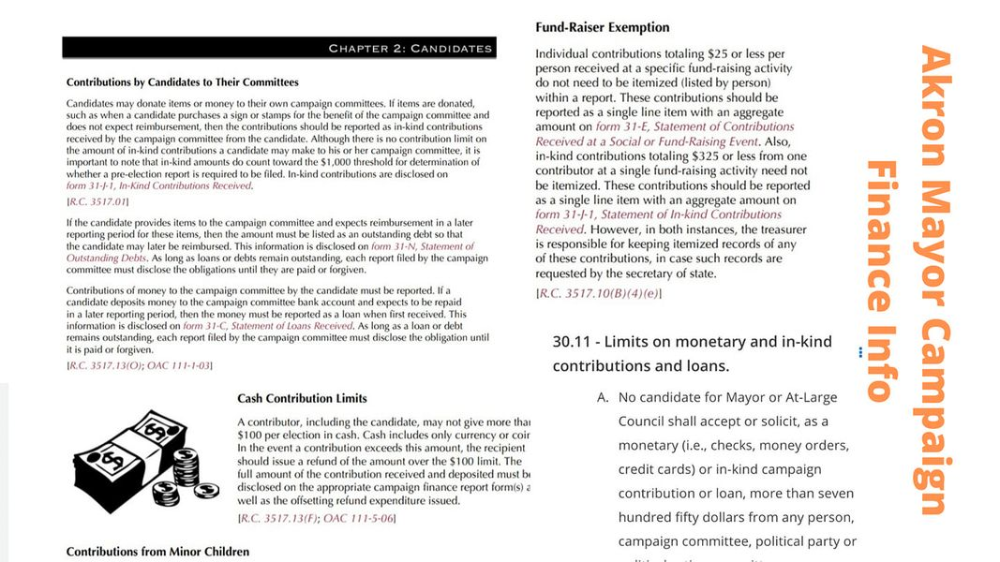

Post 1144
Jul 30, 2021 9:25:27am

Mobile uploads
These are the finance summaries that I think pertain to running for Akron mayor. Seriously consider running for Akron mayor. I'm running and so should you. The election is in 2023.
Back to Index